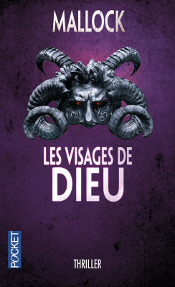

Les visages de Dieu de Mallock
Les visages de Dieu de Mallock
L’histoire
Le commissaire Mallock (qui est aussi le pseudonyme de l’auteur) dirige une équipe d’inspecteurs de la criminelle au 36 Quai des Orfèvres, à Paris. Une enquête d’une importance considérable lui est confiée. Il doit débusquer le Maquilleur, un tueur en série qui drogue et torture ses victimes avant de les maquiller pour prendre des photos. La pression qui pèse sur les épaules du commissaire est encore plus soutenue quand les médias s’emparent de la nouvelle et que le meurtrier s’attaque à l’une de ses connaissances.
Mon avis
Dès le début du roman, l’auteur entre dans le vif du sujet. Les tournures sont lourdes et passives, comme l’ambiance de l’histoire. Le commissaire est un personnage perturbé, déprimé et en plus, on est en plein hiver. Le Maquilleur enchaîne les victimes à une vitesse effrénée qui nous laisse tout juste le temps de digérer l’horreur de ses actions. Car ce serial killer est un monstre et tous ses crimes sont dégueulasses.
Quand on est habitué à ce genre de choses (parce qu’on aime les thriller ou les séries bien gores), c’est du pain béni ! En revanche, quand on s’initie à ce genre de monstruosité, il faut s’accrocher. Il m’est arrivé plus d’une fois de déposer le livre en pleine lecture parce que je ne supportais pas ce que je lisais.
Le style est bon, sinon le lecteur ne ressentirait pas cette fascination, mêlée d’un malaise indescriptible, mais c’est surtout le personnage du Maquilleur qui fout la trouille ! Je reconnais avoir beaucoup réfléchi durant cette lecture, ce qui ne m’était pas arrivé depuis longtemps au regard de mes dernières lectures (Cf. plus haut ^^). J’ai longuement tourné et retourné des formulations dans mon esprit afin d’en saisir le sens et j’ai même dû me référer plusieurs fois au dictionnaire (non sans fierté puisque j’étais ravie d’avoir trouvé un roman qui demandait autant de travail de lecture). Mais à la fin, je me suis demandée si tout cet effort n’avait pas été vain.
Une fois que l’on a compris le mode de penser de l’auteur (qui nous pousse dans l’une ou l’autre direction sans aucun scrupules), on réalise assez vite quels éléments sont à retenir pour résoudre le mystère. Je regrette seulement d’avoir deviné qui était l’assassin avant le commissaire lui-même uniquement parce que le modus operandi de l’écrivain m’était déjà familier.
Toute l’intrigue est là : qui est le Maquilleur et pourquoi réalise-t-il toutes ces horreurs innommables ?
Le lecteur veut comprendre ce personnage énigmatique (ainsi que les petits délires surnaturels de Mallock et son histoire personnelle). Il est question d’un rapport avec Dieu ou le diable, de croyances, mais la conclusion est assez sommaire. La psychologie du Maquilleur est à peine percée avec des chapitres en italique qui lui sont dédiés, comme si l’on était dans sa tête (sauf que l’on y apprend rien du tout). Son problème se résume en un mot, un nom de maladie, prononcé par Mallock durant l’un de ses rêves mystiques à la fin du livre (dans l’épilogue !). C’est trop peu ! C’est tellement facile de nous décrire le Maquilleur comme cela que c’est pratiquement insensé.
Et nous n’en savons pas plus sur Mallock et sa tendance à « voir des choses » lorsqu’il est sous l’emprise de drogues. Bon, il reste encore 3 romans dans cette Chronique barbare, alors j’obtiendrai peut-être les réponses à mes questions. Car oui, je lirai la suite, mais pas tout de suite !
Voilà pour les derniers livres que j’ai lus. Qu’en pensez-vous ? Vous les connaissez ?